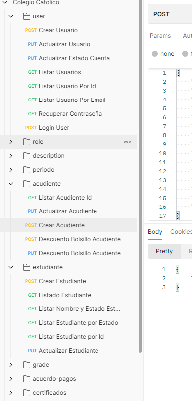

Antes que todo el proyecto esta realizado con Angular 14 y en la parte del backend con node js.
Instalar
Node 18v
PM2 (Si lo vas a instalar con Docker no es necesario) - Opcional
Descarga los archivos de github como del Front y el Backend
Proceso
Ya descargado los archivos hay que tener encuenta las variables de entorno.
.env
Variable de entorno para el backend
DB_HOST= Localhost del servidor
DB_NAME= Nombre de la base de datos
DB_USER= Nombre del usuario
DB_PASSWORD= Contraseña de la base de datos
SECRET_KEY=ADHQWUWQUQWEHDASUDHQIUWIQDUW
PORT=3000
Enviroment
Variable de entorno para el frontend
export const environment = {
production: true,
url:'http://colegio-load-balancer-1772959804.us-east-1.elb.amazonaws.com:3000/' // La url del backend
};
Ya terminado todo el proceso del backend como en el frontend instalado en tu servidor en la lojica de negocio hay que tener los siguientes.
Descarga el archivo Postman aqui
Hay otra alternativa que con Open Api: aqui
Por comenzar ingresa manten abierta las siguientes carpetas son idealea para comenzar almenos un Acudiente y Estudiante
Imagen 1.0
Crear Estudiante
Crear primero el estudiante.
{kind=link}
Crear Acudiente
Crear segundo acudiente.
{kind=link}
Crear Usuario
Crear por ultimo el usuario
Nota: Ten encuenta también de crear el Role
{kind=link}
Crear Role
Ya por último crear Role que es necesario para crear un usuario
{kind=link}